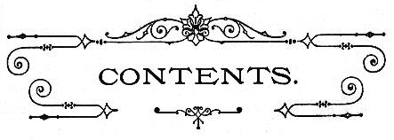

| Chapter I: | INTRODUCTION. |
| Chapter II: | EARLY GEOLOGICAL PERIODS. |
| Chapter III: | MEN OF THE RIVER DRIFT. |
| Chapter IV: | CAVE-MEN. |
| Chapter V: | ANTIQUITY OF THE PALEOLITHIC AGE. |
| Chapter VI: | THE NEOLITHIC AGE IN EUROPE. |
| Chapter VII: | THE BRONZE AGE IN EUROPE. |
| Chapter VIII: | THE IRON AGE IN EUROPE. |
| Chapter IX: | EARLY MAN IN AMERICA. |
| Chapter X: | THE MOUND BUILDERS. |
| Chapter XI: | THE PUEBLO COUNTRY. |
| Chapter XII: | THE PREHISTORIC AMERICANS. |
| Chapter XIII: | THE NAHUA TRIBES. |
| Chapter XIV: | THE MAYA TRIBES. |
| Chapter XV: | THE CULTURE OF THE CIVILIZED TRIBES. |
| Chapter XVI: | ANCIENT PERU. |
Chapter I: INTRODUCTION.
Difficulties of the subject—Lesson to be learned—The pursuit of knowledge—Recent advances—Prehistoric past of the Old World—Of the New—Of Mexico and the South—The Isles of the Pacific—Similar nature of the relics—The wonders of the present age—History of popular opinion on this subject—The teachings of the Bible—Nature of the evidence of man's antiquity—The steps leading up to this belief—Geology—Astronomy—Unfolding of life—Nature of our inquiry.
Chapter II: EARLY GEOLOGICAL PERIODS.
Necessity of a general acquaintance with the outlines of Geology—A time in which no life was possible on the globe—Length of this period—History of life commences at the close of this period—On the formation of rocks—The record imperfect—The three great periods in animal life on the globe—Paleozoic Age—Animal and vegetable life of this period—Ideal scenes in this period—The Mesozoic Age—Animal and vegetable life of this period—Advance noted—Abundance of reptilian life—First appearance of birds—Nature's methods of work—the Cenozoic Age Geological outline—Sketch of the Eocene Age—Of the Miocene Age—What is sufficient proof of the presence of man—Discussion on the Thenay flints—The Pliocene Age—Animal and vegetable life of this age—Was man present during this age?—Discussion of this subject—Summing up of the evidence—Conclusion.
Chapter III: MEN OF THE RIVER DRIFT.
Beginning of the Glacial Age—Interglacial Age—Man living in Europe during this age—Map of Europe—Proof of former elevation of land—The animals living in Europe during this age—Conclusions drawn from these different animals—The vegetation of this period—Different climatic conditions of Europe during the Glacial Age—Proofs of the Glacial Age—Extent of Glacial Ice—Evidence of warm Interglacial Age—The primitive state of man—Early English civilization—Views of Horace—Primitive man destitute of metals—Order in which different materials were used by man for weapons—Evidence from the River Somme—History of Boucher De Perthes's investigations. Discussion of the subject—Antiquity of these remains—Improvement during the Paleolithic Age—Description of the flint implements—Other countries where these implements are found—What race of men were these tribes—The Canstadt race—Mr. Dawkins's views—When did they first appear in Europe? The authorities on this question—Conclusion.
Chapter IV: CAVE-MEN.
Other sources of information—History of cave explorations—The formation of caves—Exploration in Kent's Cavern—Evidence of two different races—The higher culture of the later race—Evidence of prolonged time—Exploration of Robin Hood Cave—Explorations in Valley of the River Meuse—M. Dupont's conclusions—Explorations in the Valley of the Dordogne—The station at Schussenreid—Cave-men not found south of the Alps—Habitations of the Cave-men—Cave-men were hunters—Methods of cooking—Destitute of the potter's art—Their weapons—Clothing—Their skill in drawing—Evidence of a government—Of a religious belief—Race of the Cave-men—Distinct from the Men of the Drift—Probable connection with the Eskimos.
Chapter V: ANTIQUITY OF THE PALEOLITHIC AGE.
Interest in the Antiquity of man—Connected with the Glacial Age—The subject difficult—Proofs of a Glacial Age—State of Greenland to-day—The Terminal Moraine—Appearance of the North Atlantic—Interglacial Age—Causes of the Glacial Age—Croll's Theory—Geographical causes—The two theories not antagonistic—The date of the Glacial Age—Probable length of the Paleolithic Age—Time Since the close of the Glacial Age—Summary of results.
Chapter VI: THE NEOLITHIC AGE IN EUROPE.
Close of the first cycle—Neolithic culture connected with the present—No links between the two ages—Long lapse of time between the two ages—Swiss lake villages—This form of villages widely scattered—Irish cranogs—Fortified villages—Implements and weapons of Neolithic times—Possessed of pottery—Neolithic agriculture—Possessed of domestic animals—Danish shell-heaps—Importance of flint—The art of navigation—Neolithic clothing—Their mode of burial—The question of race—Possible remnants— Connection with the Turanian race—Arrival of the Celts.
Chapter VII: THE BRONZE AGE IN EUROPE.
Races of Men, like Individuals—Gradual change of Neolithic Age to that of Bronze—The Aryan family—First Aryans Neolithic—Origin of Bronze—How Great discoveries are made—Gold the first metal—Copper abundant—No Copper Age—The discovery of Tin—Explanation of an Alloy—Bronze, wherever found, the same composition—What is meant by the Bronze Age—Knowledge in other directions—Gradual Growth of Culture—Three Centers of Bronze production—Habitations during the Bronze Age—The Bronze Ax—Implements of Bronze—Personal ornaments—Ornaments not always made of Bronze—Advance in Arts of living—Advance in Agriculture—Warlike Weapons—How they worked Bronze—Advance in Government—Trade in the Bronze Age—Religion of the Bronze Age—Symbolical figures—Temples of the Bronze Age—Stonehenge.
Chapter VIII: THE IRON AGE IN EUROPE.
Bronze not the best metal—Difficulties attending the discovery of Iron—Probable steps in this discovery—Where this discovery was first made—Known in Ancient Egypt—How this knowledge would spread—Iron would not drive out Bronze—The primitive Iron-worker—The advance in government—Pottery and ornaments of the Iron Age—Weapons of early Iron Age—The battle-field of Tilfenau—Trade of early Iron Age—Invention of Money—Invention of Alphabetic Writing—Invasion of the Germanic Tribes—The cause of the Dark Ages—Connection of these three ages—Necessity of believing in an Extended Past—Attempts to determine the same—Tiniere Delta—Lake Bienne—British Fen-lands—Maximum and Minimum Data—Mr. Geikie's conclusions—The Isolation of the paleolithic Age.
Chapter IX: EARLY MAN IN AMERICA.
Conflicting accounts of the American Aborigines—Recent discoveries—Climate of California in Tertiary Times—Geological changes near its close—Description of Table Mountain—Results of the discoveries there—The Calaveras skull—Other relics—Discussion of the question—Early Californians Neolithic—Explanation of this—Date of the Pliocene Age—Other discoveries bearing on the Antiquity of man—Dr. Koch's discovery—Discoveries in the Loess of Nebraska—In Greene County, Ill.—In Georgia—Difficulties in detecting a Paleolithic Age in this country—Dr. Abbott's discoveries—Paleolithic Implements of the Delaware—Age of the deposits—The race of Paleolithic man—Ancestors of the Eskimos—Comparison of Paleolithic Age in this country with that in Europe—Eskimos one of the oldest races in the World.
Chapter X: THE MOUND BUILDERS.
Meaning of "MOUND BUILDERS"—Location of Mound Building tribes—All Mounds not the work of men—Altar Mounds—Objects found on the Altars—Altar Mounds possibly burial Mounds—Burial Mounds—Mounds not the only Cemeteries of these tribes—Terraced Mounds—Cahokia Mound—Historical notice of a group of Mounds—The Etowal group—Signal Mounds—Effigy Mounds—How they represented different animals—Explanation of the Effigy Mounds—Effigy Mounds in other localities—Inclosures of the Scioto Valley—At Newark, Ohio—At Marietta, Ohio—Graded Ways—Fortified Inclosures—Ft. Ancient, Ohio—Inclosures of Northern Ohio—Works of unknown import—Ancient Canals in Missouri—Implements and Weapons of Stone—Their knowledge of Copper—Ancient mining—Ornamental pipes—Their knowledge of pottery—Of Agriculture—Government and Religion—Hard to distinguish them from the Indians.
Chapter XI: THE PUEBLO COUNTRY.
Description of the Pueblo Country—Historical outline—Description of Zuñi—Definition of a Pueblo—Old Zuñi—Inscription Rock—Pueblo of Jemez—Historical notice of Pecos—Description of the Moqui tribes—The Estufa—Description of the San Juan country—Aztec Springs—In the Canyon of the McElmo—The Ruins on the Rio Mancos—On Hovenweep Creek—Description of a Cliff-house—Cliff Town—Cave Houses—Ruins on the San Juan—Cave Town—The Significance of Cliff-houses—Moqui traditions—Ruins in Northern New Mexico—Ruins in the Chaco Cañon—Pueblo Bonito—Ruins in South-western Arizona—The Rio Verde Valley—Casa Grande—Ruins on the Gila—Culture of the Pueblo Tribes—Their Pottery—Superiority of the Ancient pottery—Conclusion.
Chapter XII: THE PREHISTORIC AMERICANS.
Different views on this Subject—Modern System of Government—Ancient System of Government—Tribal Government universal in North America—The Indians not Wandering Nomads—Indian houses Communal in character—Indian Methods of Defense—Mandan Villages—Indians sometimes erected Mounds—Probable Government of the Mound Builders—Traditions of the Mound Builders among the Iroquois—Among the Delawares—Probable fate of the Mound Builders—The Natchez Indians possibly a remnant of the Mound Builders—Their early Traditions—Lines of resemblance between the Pueblo Tribes and the Mound Builders—The origin of the Indians—America Inhabited by the Indians from a very early time—Classification of the Indian Tribes—Antiquity of the Indian Tribes.
Chapter XIII: THE NAHUA TRIBES.
Early Spanish discoveries in Mexico—The Nahua tribes defined—Climate of Mexico—The Valley of Anahuac—Ruins at Tezcuco—The Hill of Tezcocingo—Ruins at Teotihuacan—Ancient Tulla—Ruins in the Province of Querataro—Casa Grandes in Chihuahua—Ancient remains in Sinaloa—Fortified Hill of Quemada—The Pyramid of Cholula—Fortified Hill at Xochicalco—Its probable use—Ruins at Monte Alban—Ancient remains at Mitla—Mr. Bandelier's investigations—Traditions in regard to Mitla—Ruins along the Panuco River—Ruins in Vera Cruz—Pyramid of Papantla—Tusapan—Character of Nahua Ruins.
Chapter XIV: THE MAYA TRIBES.
The geographical location of the Maya tribes—Description of Copan—Statue at Copan—Altar at Copan—Ruins at Quiriga—Patinamit—Utatlan—Description of Palenque—The Palace at Palenque—The Temple of the Three Inscriptions—Temple of the Beau-relief—Temple of the Cross—Temple of the Sun—Maler's Temple of the Cross—Significance of the Palenque crosses—Statue at Palenque—Other ruins in Tobasco and Chiapas—Ruins in Yucatan—Uxmal—The Governor's House—The Nunnery—Room in Nunnery—The Sculptured Façades—Temple at Uxmal—Kabah—Zayi—Labna—Labphak—Chichen-Itza—The Nunnery—The Castillo—The Gymnasium—M. Le Plongon's researches—The tradition of the Three Brothers—Chaac-Mal—Antiquity of Chichen-Itza.
Chapter XV: THE CULTURE OF THE CIVILIZED TRIBES.
Different views on this question—Reasons for the same—Their architecture—Different styles of houses—The communal house—The teepan—The teocalli—State of society indicated by this architecture—The gens among the Mexicans—The phratry among the Mexicans—The tribe—The powers and duties of the council—The head chiefs of the tribe—The duties of the "Chief-of-Men"—The mistake of the Spaniards—The Confederacy—The idea of property among the Mexicans—The ownership of land—Their laws—Enforcement of the laws—Outline of the growth of the Mexicans in power—Their tribute system—How collected—Their system of trade—Slight knowledge of metallurgy—Religion—Quetzalcohuatl—Huitzilopochtli—Mexican priesthood—Human sacrifice—The system of Numeration—The calendar system—The Calendar Stone—Picture-writing—Landa Alphabet—Historical outline.
Chapter XVI: ANCIENT PERU.
First knowledge of Peru—Expeditions of Pizarro—Geography of Peru—But a small part of it inhabitable—The tribes of ancient Peru—How classified—Sources of our knowledge of Peru—Garcillaso De La Vega—Origin of Peruvian civilization—The Bolson of Cuzco—Historical outline—Their culture—Divided into phratries and gentes—Government—Efforts to unite the various tribes—Their system of colonies—The roads of the Incas—The ruins of Chimu—The arts of the Chimu people—The manufacture of Pottery—Excavation at Ancon—Ruins in the Huatica Valley—The construction of a Huaca—The ruins at Pachacamac—The Valley of the Canete—The Chincha Islands—Tiahuanuco—Carved gateway—The Island of Titicaca—Chulpas—Aboriginal Cuzco—Temple of the Sun—The Fortress—General remarks.
Preface